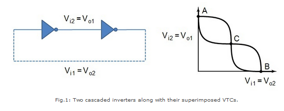
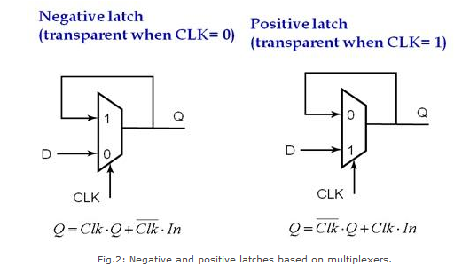
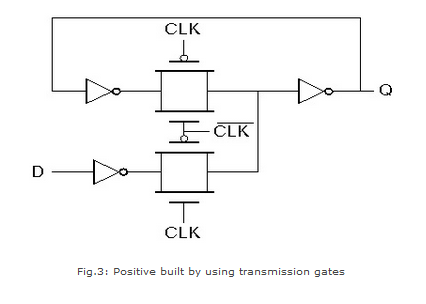

Shakshat Virtual Lab 
INDIAN INSTITUTE OF TECHNOLOGY GUWAHATI
The aim of this experiment is to design and plot the characteristics of a positive and negative multiplexers based latches .
Introduction
A bistable circuit- a circuit having two stable states that represent 0 and 1, can be designed using a positive feedback. The basic idea is shown in fig.1, which shows two inverters connected in cascade along with the voltage-transfer characteristic typical of such a circuit.

The above circuit has only three possible operation points (A, B, and C), as demonstrated on the combined VTC. Out of these, A and B are the only stable operating points, and C is a metastable point; therefore, the name bistable. The circuit serves as a memory, storing either a 1 or a 0 corresponding to positions A and B. We can change the state of such a circuit by cutting the feedback loop or by overpowering the feedback loop. The first is called a multiplexer based Latch and it realizes the following multiplexer equation:

MUX based Latches
Fig.2 shows an implementation of positive and negative static latches based on multiplexers. For a negative latch input D is selected when the CLK is 0 whereas when the CLK is high, output is held. This is reversed for a positive latch.

A transistor-level implementation of a positive latch based on multiplexers is shown in Fig.3. When the CLK is high, the bottom transmission gate is on and the latch is transparent- that is, the D input is copied to the Q output. During this phase, the feedback loop is open, since the top transmission gate is off.
